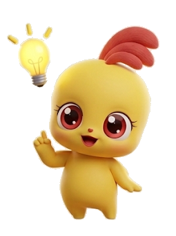

우리 반 막대그래프 공장
조사한 자료를 넣으면 막대그래프가 바로 그려져요
[4수04-01] 자료를 수집하여 그림그래프나 막대그래프로 나타내고 해석할 수 있다
1. 자료 넣기
그래프 제목
가로(항목) · 세로(단위)
항목과 수
+ 항목 추가
예시 자료
눈금 한 칸
1
2
5
10
막대 색
주황
파랑
초록
보라
무지개
그래프 그리기
그림으로 저장
2. 막대그래프
자료를 넣고 그래프 그리기를 눌러 보세요.
그래프를 읽을 때는 ① 제목 ② 가로·세로 ③ 눈금 한 칸의 크기 ④ 가장 많은 것·적은 것 순서로 살펴봐요.
 그래프를 읽을 때는 ① 제목 ② 가로·세로 ③ 눈금 한 칸의 크기 ④ 가장 많은 것·적은 것 순서로 살펴봐요.그래프를 읽을 때는 ① 제목 ② 가로·세로 ③ 눈금 한 칸의 크기 ④ 가장 많은 것·적은 것 순서로 살펴봐요.
그래프를 읽을 때는 ① 제목 ② 가로·세로 ③ 눈금 한 칸의 크기 ④ 가장 많은 것·적은 것 순서로 살펴봐요.그래프를 읽을 때는 ① 제목 ② 가로·세로 ③ 눈금 한 칸의 크기 ④ 가장 많은 것·적은 것 순서로 살펴봐요.